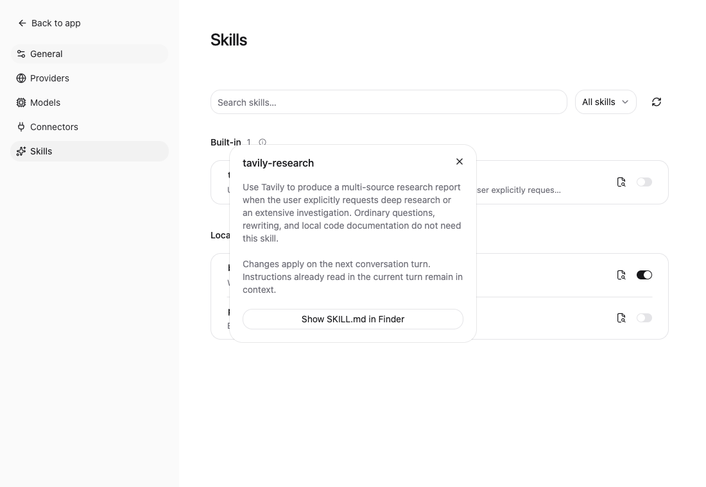
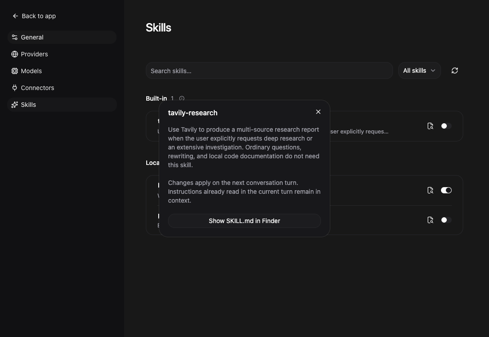

同事的这几条建议，
到底在修什么？
一份可以慢慢读的代码讲解。先建立基础概念，再沿着真实数据流理解 Tavily、Skills、Save 状态和这次修复。
约 30–45 分钟 · 3 个本地交互演示 · 无外部依赖先认识：谁在做什么
这次改动的核心：让工具拿到的信息可以找回，让长任务可以继续，让界面显示的状态与真正执行的状态一致。
你可以把一次联网回答理解为下面这条调用链。模型负责决定需要什么资料；真正联网、保存文件的是 WorkLens 的代码。
| 名词 | 在本项目中是什么意思 | 不能混淆的地方 |
|---|---|---|
| Skill | SKILL.md 中的说明：什么任务该用什么工具、怎么执行、怎么处理失败。 | 说明本身不会实现网络请求，也不会自动配置 API Key。 |
| Connector | 连接服务的程序模块，管理凭据、HTTP 请求和可调用工具。 | 配置好 Tavily 才能提供对应工具。单独安装 skill 不等于接入服务。 |
| Tool | 模型能调用的函数入口，例如 web_search、web_research。 | 模型传入参数，主进程校验后执行，结果再返回模型。 |
| API | Tavily 提供的程序接口，例如 POST /research。 | 远端接口能力与我们写的 skill 文案是两个来源。 |
| Renderer / Main / IPC | Renderer 画界面；Main 做网络、文件和凭据操作；IPC 是它们之间的类型化消息通道。 | 按钮禁用改善体验，主进程校验才是执行边界。 |
所以两层都有价值：Connector
使“提交研究、查状态、保存报告”成为可能；skill
指导模型正确使用这些能力。当前 tavily-research 是
WorkLens 编写的指导文件，接的是 Tavily 官方 API，不能称为从 Tavily
官方下载的 skill。
读代码前：九个基础词
- 函数与参数
-
函数是一段可复用步骤。
saveResult(..., text)表示把 text 交给保存流程处理。 - 对象与 JSON
-
{status: "success", resultPath: "…"}是键值组成的对象。JSON 是传输或保存这种结构的文本格式。JSON.stringify把对象变成文本，JSON.parse把文本读回对象。 - async / await / Promise
- 网络和磁盘需要等待。Promise 表示尚未完成的结果；await 等结果完成，再执行后续语句。await 期间其他操作可以继续，所以会有并发。
- return / throw / try…catch…finally
- return 返回结果；throw 抛出失败；catch 处理失败；finally 无论成功失败都执行，常用来释放读取器、恢复按钮状态。
- && / || / !
-
分别是“并且”“或者”“取反”。
busy || missing || unchanged表示任一条件为真就禁用 Save。 - 字符、字节、token
- 它们不是同一单位。UTF-8 中中文常占 3 字节，许多 emoji 占 4 字节；模型 token 是另一种切分。JavaScript 的 string.length 实际数 UTF-16 单元，也不总等于肉眼看到的字符数。
- Stream / chunk
- Stream 是逐块到达的数据流；chunk 是一块数据。可以一边收一边统计，而不用先把整份响应读进内存。
- 持久化 / compaction
- 持久化是写入磁盘，重启后仍可读取。Compaction 把较早对话压缩为摘要，以腾出上下文；摘要不是完整原文备份。
- 幂等 / handle
- 幂等指重复执行不会制造额外效果。查询状态通常可以重复；创建付费研究不应随意重试。Handle 是本地任务标识，用来继续查已有任务。
① 完整保存，短预览，路径放前面
同事：web_search 和 web_fetch 超过阈值都应落完整结果，inline 只留短 preview；resultPath 放在结果最前面。
inline 指直接塞进工具回复；preview
是简短预览；resultPath 是完整结果在磁盘上的位置。
锁定的 Pi 版本在为摘要序列化对话时，对一条工具结果保留前 2,000 个 JavaScript 字符单元。这是摘要输入的截断规则，并非“所有正常工具输出都只能有 2,000 字符”，更不保证摘要模型一定逐字保留路径。
如果结果先放 20,000 字正文，最后才写路径，摘要输入可能根本看不到路径。即使完整文件存在，后续模型也可能不知道去哪里读。
试一试：同样的信息，顺序不同
本地教学模拟：生成约 3,000 字正文，只展示截取后的头尾；不会调用模型。
当前策略：搜索结果序列化后超过
1800
才落盘；抓网页结果无论长短都落盘；输出中先写路径、续读方式，再写状态和一段
500
字符预览。阈值留下少量包装余量，但它不是对任意超长路径的严格 2,000
字符保证。
export async function toolResult(
connections: TavilyConnections,
artifacts: LocalArtifacts,
sessionId: string,
operation: string,
value: Json,
signal?: AbortSignal,
alwaysSave = false,
) {
const full = connections.redact(JSON.stringify(value, null, 2));
let envelope = value;
if (alwaysSave || full.length > INLINE_LIMIT) {
try {
const saved = await saveResult(
connections,
artifacts,
sessionId,
`${operation}-result.json`,
full,
signal,
);
envelope = {
...saved,
status: value.status,
truncated: true,
preview: full.slice(0, 500),
};
} catch (error) {
if (signal?.aborted) throw error;
// Never claim a full result exists when storage failed, or silently discard it.
envelope = {
status: "storage_error",
remoteStatus: value.status,
retrievalError:
"Could not save the result. Full data remains inline; preserve it before compaction.",
result: value,
};
}
}
return response(connections, envelope);
}-
JSON.stringify(value, null, 2)保留完整对象，并排版为可读 JSON。 -
connections.redact先去除凭据。这里的“完整”指保留 API 字段与正文，敏感值仍会脱敏。 -
alwaysSave || full.length > INLINE_LIMIT决定是否保存；web_fetch 会启用 alwaysSave。 -
...saved把路径等字段展开到最前面；preview 是整次调用的一段预览。 -
磁盘失败时返回
storage_error并保留完整 inline 数据，明确告知未保存。此时不能承诺压缩后可恢复。
“完整保存”也有边界：HTTP 响应已超过 8 MiB 会先拒绝；不能把超限拒绝与保存成功混为一谈。
② Web Fetch：按需续读，不是每页塞 12k
同事：超过阈值先落盘，需要时让模型用 read + offset/limit 续读，不要按页内联 12k × N；小于等于 12k 的页也要能找回。
原来每页截取 12,000 字，如果抓 5 页，总计仍可能约 60,000 字，还没算 JSON 包装。“每页有限制”不等于“整次调用有限制”。同时，短页若只 inline，压缩后就缺少可定位的文件副本。
现在一次 web_fetch 把整个 API 返回对象保存下来，包括成功页与 failed_results。模型先看短回执，确实需要原文时再读磁盘。
// 教学示例：path 使用本次真实返回的 resultPath
read({ path: resultPath, offset: 1, limit: 200 })
// 如果确实已读到第 200 行，下一段从 201 开始。
read({ path: resultPath, offset: 201, limit: 200 })offset 是从 1 开始的行号，limit 是最多读取的行数，不是字节位置，也不是页码。应按 read 实际返回的下一行提示继续，不要假定每次一定读满。
还有一个细节：JSON 的字符串可能本来就只有一行，但这一行有几十万字。按“行”续读时，超长单行可能被字节上限截断，因此当前生成显示副本，把每行控制在 200 UTF-8 字节以内。200 行加换行大约 40 KiB，低于 Pi 默认 50 KiB 限制。
// 200 lines fit below Pi read's 50 KiB byte limit, including multibyte text.
export function readableLines(text: string): string[] {
return text.split("\n").flatMap((line) => {
const chunks: string[] = [];
let chunk = "";
let bytes = 0;
for (const character of line) {
const size = Buffer.byteLength(character);
if (bytes + size > 200) {
chunks.push(chunk);
chunk = "";
bytes = 0;
}
chunk += character;
bytes += size;
}
chunks.push(chunk);
return chunks;
});
}
循环使用 for…of 遍历字符，再用
Buffer.byteLength 计算 UTF-8 字节数。超过 200
就开始新行，不从多字节字符中间硬切。
| 返回字段 | 用途 |
|---|---|
| resultPath | 给模型 read 的显示版本；可能插入换行。 |
| rawResultPath | 保留脱敏后原始内容；程序要解析 JSON 或需要精确文本时使用它。 |
| totalLines / retrieval | 总行数和续读说明。 |
两个路径有时相同：原文件不需要换行时，不重复生成副本。显示版本可能不是合法 JSON，所以不能用它代替 rawResultPath 做 JSON.parse。
③ 8 MiB：检查真实收到的数据
同事：HTTP 8 MiB 只看 Content-Length，应按实际字节 stream cap。
Content-Length
是服务端的响应头。它可能缺失；在解压缩等场景下，它也不等于 fetch
暴露给代码的正文大小。因此，只在头部写“超过 8 MiB 就拒绝”并不足够。
// 原思路的教学简化：只信响应头
if (Number(response.headers.get("content-length")) > MAX_RESPONSE) throw error;
const text = await response.text(); // 这里仍可能读入很大的正文
修复保留响应头预检查，同时读取真实数据流。8 × 1024 × 1024 = 8,388,608
字节；MiB 与十进制 MB 不一样。
const chunks: Uint8Array[] = [];
let size = 0;
const reader = response.body?.getReader();
if (reader) {
try {
for (;;) {
this.signal.throwIfAborted();
const { done, value } = await reader.read();
if (done) break;
size += value.byteLength;
if (size > MAX_RESPONSE)
throw new ServiceError(
"result_too_large",
"Tavily 响应超过 8 MiB，请缩小查询范围",
);
chunks.push(value);
}
} finally {
await reader.cancel().catch(() => {});
reader.releaseLock();
}
}
const text = Buffer.concat(chunks, size).toString("utf8");getReader()获取数据流读取器。await reader.read()拿下一块，done 表示读完。-
先把
value.byteLength加入累计值，超限立即抛错，避免继续累计。 finally取消读取并释放锁，失败也执行清理。- 未超限才拼接缓冲区并解码 UTF-8，避免中文字符跨 chunk 时分段解码损坏。
这个 cap 限制的是应用接受并累计的响应正文；不是整个进程内存绝不会超过 8 MiB。当前 chunk、缓冲区拼接和解码都会产生额外开销。测试覆盖缺失/错误 Content-Length 时实际超限的情况。
④ Deep Research：一次提交，多次查询
同事：去掉 DeerFlow prompt skill，改接 Tavily 官方 POST /research。它是长任务，现有 120s 和 Accept: application/json 不够。
之前的 prompt skill 是指导模型自己规划和搜索；它不等于调用 Tavily 托管的研究任务。现在删除旧 deep-research，添加四个工具中的研究两个入口：
| 工具 | 作用 | 模型拿到什么 |
|---|---|---|
| web_research | POST /research 提交一次任务。 | handle + accepted/其他状态。 |
| web_research_status | 根据本地 handle 找 requestId，GET 查询已有任务。 | 运行状态，或报告路径和来源数据路径。 |
我们选择 JSON 轮询，没有接 SSE。SSE
是持续连接、服务端不断发事件；polling 是客户端隔一段时间发查询。官方创建接口支持 stream:false 的任务方式，因此保留
Accept: application/json
合理。修复重点是把长任务寿命与一次 HTTP
等待分开，不是把所有请求超时改成无限。
任务生命周期模拟
尚未提交。此演示不联网、不计费。
实际代码每次 HTTP 等待有 60 秒超时，TavilyHttp 生命周期总上限 120 秒。一次状态调用的轮询等待窗口最多 30 秒，默认 5 秒；单次网络请求耗时也算实际等待，因此 wait_seconds 不是严格的墙钟超时保证。远端任务可以继续运行，稍后再拿同一个 handle 查询。
const existing = await this.load(path);
if (existing) {
this.check(existing, http);
return this.pending(handle, existing);
}
http.signal.throwIfAborted();
const record: ResearchRecord = {
revision: http.connection.revision,
state: "submitting",
};
// Persist before dispatch: a crash or lost response must not trigger a second POST.
await atomicJson(path, record);
try {
const data = await http.request("POST", "/research", {
...input,
stream: false,
});
if (
typeof data.request_id !== "string" ||
!/^[\w-]{1,200}$/.test(data.request_id) ||
this.connections.redact(data.request_id) !== data.request_id
)
throw new ServiceError(
"invalid_response",
"Tavily 未返回有效的研究任务标识",
);
record.requestId = data.request_id;
record.state = "pending";
// Preserve the receipt even if the local run was just cancelled.
await atomicJson(path, record);
return this.pending(handle, record);为什么必须先落一张“提交记录”？
最危险的情况是：Tavily 已收到付费任务，但网络断开，WorkLens 没拿到回执。如果此时自动重试 POST，可能创建第二个付费任务。
现在用连接 revision 与本次 runId/callId 生成稳定
handle，在同一会话的任务目录中先写
submitting，再发请求。相同调用重试时先查记录，已有记录就不再发 POST。拿到
requestId 后，即使本地刚取消，也尽量保存它。
这叫“防止重复提交”，但不能宣称远端 exactly-once：它只覆盖同一调用标识。模型另起一次新调用会有新标识，所以 skill 也明确要求不要重新提交。
| 遇到的情况 | 处理 |
|---|---|
| 有 requestId，仍在运行 | 同一会话中用 handle 继续查询；停止本地等待不会取消远端任务。 |
| 发送后没有可靠回执 | submission_unknown。不要自动再提交；需核对 Tavily 账号侧任务。 |
| 已完成但报告保存失败 | storage_error；用同一 handle 再查，重试保存，不创建新研究。 |
| 应用重启 | 任务记录在磁盘；原会话、原连接仍可恢复查询。没有实现后台自动通知。 |
| 更换 Tavily 连接 | revision 不同，旧 handle 被拒绝。已保存的本地报告仍在。 |
报告如何保存？
完成后保存原 API 对象 JSON 和带来源列表的 Markdown 报告。回执只返回路径、行数、handle、状态；模型需要读全文时再调用 read。查询已完成任务优先返回本地记录中的结果，避免重复下载。
⑤ Skills：删除旧内容，统一实际来源
code-documentation
已按你的要求删除，而不是继续修补不存在的 WorkLens 路径和 present_files
指令。旧 DeerFlow deep-research 也删除；新目录及 frontmatter 名称为
tavily-research。
这解决两种问题：文档指向不存在的工具，会让模型执行失败；名称或卡片描述与实际文件不同，会让用户难以判断自己启用了什么。
界面现在直接显示文件中的 name；卡片描述从原 description 提取首句、最多 140 字符，不另写宣传摘要；点击名称的 Dialog 显示完整 description。关于“下一轮生效”的说明只放在 Dialog，分组 information 不重复放。
查看这次 Dialog 的明暗主题截图
使用隔离模拟连接数据和真实 tavily-research 文件描述，展示当前构建的界面。


同名文件为什么还需要 ID？
内置和本地都可能有同名 skill。name
适合表达名称，不能唯一定位文件。现在 ID 来自
SHA256(source + path)；打开文件和切换开关都按 ID
找记录。界面和真正加载给模型的路径采用同一套“内置优先”规则，本地同名项显示为被覆盖，不能通过它误改另一个来源。
为什么并发开关可能丢失设置？
// 教学时间线：初始 disabled = []
A 读取 [] → 准备写 [alpha]
B 读取 [] → 准备写 [beta]
A 写 [alpha]
B 写 [beta] // alpha 的更新被覆盖
// 修复：完整的读 → 改 → 写进入同一个队列
A 读 [] → 写 [alpha] → B 读 [alpha] → 写 [alpha, beta] setEnabled(id: string, enabled: boolean) {
return this.queue.run("skills", async () => {
const skill = this.find(id);
if (skill.shadowedBy)
throw new Error("同名技能已由其他来源提供，请修改生效版本的开关");
const disabled = this.disabledNames();
if (enabled) disabled.delete(skill.name);
else disabled.add(skill.name);
await this.state.update({ disabledSkills: [...disabled] });
return this.refresh();
});
}重点是把“读取旧值”也放进队列；如果只把最后写盘串行，仍会把基于旧快照算出的结果写进去。队列复用项目原有 SerialQueue。
刷新为什么需要 generation？
只修改 SKILL.md 正文时，名字和开关可能都没变。若会话缓存只比较名字，就会继续用旧内容。刷新现在增加 generation，configurationKey 随之变化，下一轮重新加载配置。已经读入当前轮的旧指令不会从模型上下文凭空消失，这就是 Dialog 提示的实际含义。
⑥ Save：禁用条件写得合理吗？
整体合理，而且已集中为共享判断，没有让每个 Connector 各写一套。连接器自己的字段与 IPC 调用仍各自维护，共享代码只处理表单评估和动作生命周期。
| 情况 | Save | 原因 |
|---|---|---|
| 必填字段只有空白 | 禁用 | trim 后为空，无法组成请求。 |
| 已保存，没改动，token 输入为空 | 禁用 | token 可以沿用加密保存的凭据，并非缺失；但无需重复保存。 |
| 输入新 token，其他必填完整 | 可点 | 有实际变更。 |
| 内容齐全但格式错误 | 可点，点击后显示字段错误 | 让用户知道为什么错误；校验失败不会发出保存请求。 |
| 上次连接出错，信息没变 | 可重试 | 不把失败连接永远锁为 unchanged。 |
| 正在 Test / Save / Remove | 禁用 | 等待当前动作结束。 |
亲手看禁用条件
这里演示的是状态公式，不会保存真实设置。这次复查发现的边界问题
保存地址原本为 https://github.com，用户误改成
https://github.com/repo。用于判断凭据能否复用的函数只比较
origin，两者 origin 相同，于是旧逻辑把它当成
unchanged；按钮禁用后，用户无法点击获得“不允许仓库路径”的错误。
修复让 unchanged 同时要求“当前没有字段错误”。正常的末尾斜杠仍视为同一个有效地址，不制造无意义的保存。
// Equivalent valid values need no save. Invalid edits must remain actionable
// so explicit validation can explain the error (for example a GitHub path).
// A connection whose last validation failed can still be re-saved as a retry.
const unchanged =
canReuseToken &&
!optional(form.token) &&
!connection?.error &&
Object.keys(errors).length === 0;
Object.keys(errors).length === 0
表示没有任何错误字段；不是“没有输入”。新增回归测试覆盖路径、query、hash
三种无效修改。
保存成功为什么先刷新再清空 token？
如果先清空 token，但界面还保留旧的“未配置”连接状态，表单会瞬间判定 token 缺失并闪红。共享动作先 await refresh，让父组件拿到已保存连接，再清空输入。保存成功也不等于连接测试成功，两种反馈仍区分。
禁用是交互规则，不能代替主进程校验。IPC 输入仍需校验格式、服务类型、凭据复用资格等，避免绕开界面的调用直接执行。
⑦ 重复代码与文件大小，怎样判断
不能用“文件越短越好”判断质量。更有用的检查是：一个概念有没有两份实现？一个文件是否同时承担无关职责？修复一处是否必须同步改很多地方？
| 文件 | 主要职责 |
|---|---|
| tavily/connection.ts | 配置、凭据与连接快照。 |
| tavily/http.ts | 请求、超时、重试、字节限制、HTTP 错误转换。 |
| tavily/service.ts | 工具参数定义、校验与分发。 |
| tavily/research.ts | 任务记录、提交去重、查状态与报告保存。 |
| tavily/results.ts | 完整结果保存与短回执。 |
| main/readable-lines.ts | GitHub 与 Tavily 共用的 UTF-8 长行切分。 |
| connector-validation.ts / use-connector-action.ts | 共享表单规则 / 动作生命周期。 |
复查确实找到了一处重复：Tavily 与 GitHub 的 200 字节长行切分。现在提取为共享纯函数，保留两边各自的结果包装策略。没有为了统一而把服务特有的研究状态、鉴权等塞进通用框架。
本次主要新模块 research 约 243 行；Skills 服务约 126 行；SkillsSettings 约 338 行。它们没有被堆成一个巨型文件，但行数只能提示风险，不能证明没有 bug。
⑧ 怎么测试：模拟能证明什么，真实调用看什么
先区分三层测试，否则“测试通过”容易被误解为“真实 Tavily 账号全部试过”。
| 层次 | 怎么做 | 能证明什么 |
|---|---|---|
| 单元 / 本地集成 | Vitest + 本地 HTTP 服务 + 临时目录。 | 真实代码在指定响应、断网、超限、取消、重启条件下符合预期；不消耗 Tavily 额度。 |
| 浏览器 / Electron | Playwright，隔离的 WORKLENS_TEST_ROOT。 | 界面按钮、错误提示、Dialog、开关、刷新与本地状态持久化正常。 |
| 真实账号验收 | 配置自己的 Tavily 连接，显式发起小范围研究。 | 真实鉴权、账号权限、额度、官方响应和最终报告链路。此轮没有付费云端实测。 |
你可以照做的验收步骤
- 在 Tavily Connector 中保存 API Key，再单独执行连接测试。成功后确认研究工具可用。
- 启用 tavily-research，开始下一轮对话。普通问答不应无故启动付费研究。
- 明确说：“请用 Tavily 深度研究一个小范围主题，提交一次后保留 handle，告诉我当前进度。”注意这一步可能消耗真实额度。
- 看到 accepted 时，说明任务已创建，不代表报告已经完成。
- 同一会话继续说：“查询刚才那个 handle 的任务，不要重新提交。”应走 web_research_status。
- 可以停止本地等待，重启应用再回原会话查询同一个 handle；不要更换连接配置。
- completed 后检查返回的报告路径、来源 JSON；让模型用 read 分段读，确认结尾和来源也在。
- 不要在真实账号反复制造提交超时来测去重。网络丢回执等失败注入交给本地自动化测试。
npm run typecheck
npm test
npm run build
npx playwright test --config playwright.ui.config.ts
npx playwright test tests/e2e/skills.spec.ts使用 Node.js 24。需要先 build，再跑依赖 dist 的 UI 测试；测试过程中不要同时重建 dist。测试数据必须隔离，不能指向真实会话目录。
具体回归位于
tests/connectors/tavily/http.test.ts、service.test.ts、tests/skills.test.ts、tests/connector-validation.test.ts
和 Skills UI/Electron
测试中。跨平台安装包与真实云端账号仍是独立验收范围。
⑨ 提交之后：同一个 PR 会自动更新
PR #27 的来源分支是
feat/skills-and-web-search。把这次变更 commit，再 push
到这个分支，就会更新现有 PR，不需要重新建 PR。
同事留下 comments 代表给了反馈，不自动等于正式批准。更新代码和合并进 main 是两步，这次只提交并推送修复。
回到真实依据
- 同事的原始评论
- 本仓库 Tavily 实现说明
- 实际 tavily-research SKILL.md
-
node_modules/@earendil-works/pi-coding-agent/dist/core/compaction/utils.js：当前锁定 Pi 的摘要截断规则。
本页基于 2026-09-16 的分支实现；代码块标注“实际代码”的部分摘自本仓库，标注“教学示例”的部分用于解释概念。后续代码更新时，请以源文件为准。